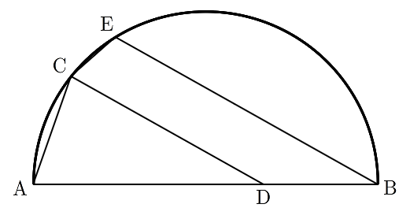

그림과 같이 길이가 인 선분 를 지름으로 하는 반원이 있다. 호 위에 점 를 이 되도록 잡고, 선분 위에 점 를 가 되도록 잡는다. 점 를 지나고 선분 와 평행한 직선이 호 와 만나는 점 중 가 아닌 점을 라 할 때, 선분 의 길이는? [4점]

① ② ③
④ ⑤
지름 위의 원주각은 직각이니까 직각삼각형 에서 길이부터 다 구해 두자. 는 선분 위의 점이라 는 6에서 빼면 돼.
판단와 평행한 직선의 방향이 필요하니까, 삼각형 에서 코사인법칙으로 에서의 각을 먼저 잡는 거야.
와 는 둘 다 반원 위라 직선 의 같은 쪽에 있어. 그래서 와 에서 생기는 두 각은 동위각으로 같은 거야.
주의가 의 어느 쪽인지에 따라 가 와 같아지기도 하고 더해서 가 되기도 해. 위치는 각의 크기로 정해야 해.
두 각 모두 과 사이라 코사인이 작은 쪽이 더 큰 각이야. 원주각은 같은 호에 대한 중심각의 절반이니까, 각이 크면 에서 그 점까지의 호도 길어.
판단와 는 같은 반원 위라 에서 잰 호가 짧은 가 먼저 와. 그러면 와 가 사각형 의 마주 보는 꼭짓점이 되고, 원에 내접하는 사각형의 마주 보는 각의 합 를 쓸 수 있어.
삼각형 에서 코사인법칙을 쓴 거야. 에서 뺀 각의 코사인은 부호만 바뀌니까 빼는 항이 더하는 항이 돼.
단축양변에 33을 곱하면서 를 한 문자로 묶으면 근호 없는 이차방정식이 돼서 인수분해가 바로 보여.
는 길이라 양수니까 도 양수야. 그래서 은 버려.
확인은 다른 삼각형으로 하자. 라 는 피타고라스로 나오고, 평행 조건 ㉣이 정한 로 삼각형 의 코사인법칙을 세워 를 넣으면 과 같아져.